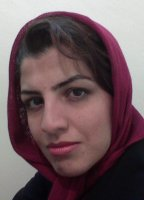

|
|
|
Browsing
Contact Us |
Campaigners |
Face to Face |
Tribune |
Interview |
News |
On the Web |
One Million |
Report
Farsi | Français | German | Italian | Spanish | العربية Also in this section
|
 The Demand for Equality Cannot Be SilencedNoushin Keshavarznia Monday 19 November 2007 Translation: Roja Bandari Despite hearing the good news about the temporary suspension of Delaram Ali’s sentence and an order to reconsider her case, we can’t deny that these are difficult times. At any moment, we are expecting to hear news of another illegal arrest; another illegal confrontation with the peaceful movement that is seeking equality of women and men in our country.The events of these past few months flash before my eyes like scenes from a film: they raid a workshop on women’s rights in Khorramabad and accuse the most upright and decent people of this land of corruption and debauchery; they arrest them in a degrading and offensive manner. (1) They pry into people’s personal lives, monitor their phone conversations, arrest them while making vague allegations of indecency and interrogate them about their campaigning for equal rights. They make menacing telephone calls in order to call campaign members in for questioning (2). They deprive a mother of her right to visit her innocent child (Ronak Saffarzadeh) who is in custody and instead they call her names and assault her. (3) I think about these incidents and tens of other similar events since the beginning of the campaign and I conclude without a doubt that we should expect to hear still more painful news. The excessive pressures, confrontations, arrests and heavy sentences are elements of a storyline that has been composed with an animosity toward the rights of the freedom-seeking women of this land. We are reaching the part in this story where Delaram Ali’s heavy and unjust sentence is carried out, and this is not the end of the matter. Although we can never become inured to hearing bad news, we are no longer taken by surprise. Experience has proved that troubles come not in single spies but in battalions and the architects of these confrontations are likewise on the roll. What is really the aim hidden behind this apparently bizarre plan? How can they stop the activists of this joyful and thrilling movement? I believe that these pressures and seemingly diverse actions all have one objective: to spread the seeds of intimidation among the activists and especially the younger members of the campaign. Older generations probably long ago made up their minds to step out on the difficult but sweet path to the equality of women and men. So those in power seek to harass and threaten the younger and less known activists with a variety of different and apparently spontaneous attacks, paralyze them with suspended sentences and chastise them with lashings or prison sentences. Maybe this is the old strategy of intimidation and death, just as the popular Persian proverb says, “fear is the brother of death”. When fear triumphs over human beings, the course of life grinds to a halt. Terrorizing activists through incarceration, suspension and expulsion from universities, and using their families to put pressure on them are all instruments that have been conceived in order to bring about the death of the movement. But I believe that there is something that the architects of this strategy of fear overlooked in their analysis; that the outcome of this strategy of fear is not always destruction and death but sometimes the outcome is passion, joy, and life. I am astonished that just as in decades past, they still resort to intimidation at a time when information is shared so easily and quickly that nothing can be concealed from the keen eyes of international observers and defenders of equality. Supporters of equal rights all around the world learn about the conditions faced by each other thanks to extensive sharing of news and information. Instead of analyzing the situation and taking note of the civic demands of women and men, the architects of the equation of fear make unwise decisions. One of the characteristics of the One Million Signatures Campaign is that the campaign does not rely on one or two well-known and prominent figures. In this campaign, every member’s activity is considered valuable and is supported by other members. In this campaign there are no hierarchies or ranks where some members are on top and some below. Each member gets the same protection and support no matter how young and unknown they are, no matter where they are from, even if they have been with the campaign for only one day. There is no bias and favoritism in publicizing their case and in attracting the support of public opinion to ensure their safety. Besides, our dreams and hopes—that transcend generations and status—cannot be confined in a prison made of rocks and metal! No chain and shackles have been invented that can lock up and suppress such widely shared dreams and desires! Despite severe surveillance and constant prying into people’s private lives, the existence of these women and girls who strive for equality fuels the enthusiasm of all, stirs up their passions and desire for life and their love of human equality! Imprisoning young women like Delaram, Ronak, and Hana not only does not silence the voices that demand gender equality, but the passion for life and the demand for equality will be spread even in the chill air of our prisons. Illegal confrontations with the law! There is another lesson to be learned from the confrontation imposed on the activists of the women’s movement and the campaign as a result of the peaceful gathering of Khordad 22nd. The suppression of a peaceful and legal gathering such as this one aims at undermining the article in the constitution that explicitly allows these peaceful gatherings without requirement of a permit. With these reactions, they make a mockery of this article just like many other articles of our law and they tell us that the pages of the constitution are nothing more than worthless pieces of paper! One must ask how they can so easily make a mockery of a law passed not long ago by the elected legislature of this nation; a document for which many innocent people sacrificed their lives. Which one endangers our national security: undermining such a valuable document, or a demand for gender equality? It has been a while since the bludgeon of sexism was raised aloft, yet no-one has stirred. It has been a while since it started coming down on the heads of equality and freedom-seeking women and men and still nothing has changed in our movement. This simple equation can only be solved with love. The result of sticks and clubs is not always intimidation and isolation; sometimes it is twice the strength and twice the love for continuing on the path we set out on. Facing oppression and injustice will strengthen us just like seeing the same oppression and injustices in the so-called comfortable bosoms of families motivated us to take this path. I know that facing suspension, imprisonment, degradation, insults, and threats is difficult, that being far from your loved ones is difficult; but it is not more difficult than facing the legal discrimination that is present every day and every moment of our lives, the discrimination that is being multiplied and facilitated through a catalyst called the new “Family Protection Legislation” proposed by our "woman-loving" government. Like a good friend and fellow-campaigner remarked, “this is not worse than what happens to our women in their homes.” P.S.(1) On September 14th, the police raided a women’s rights workshop in a private residence in Khorramabad (the capitol of Lorestan province), strip-searched the participants and arrested them. The police had told the public that this was a lewd and indecent gathering and the women were loose and corrupt. Spectators insulted the women as they were taken to the police cars. (2) According to Iranian law, it is illegal to call individuals in for questioning without a written notice, yet women’s rights activists are summoned by phone and forced to go to strange locations for interrogation. (3) Ronak Saffarzadeh, a 21 year old campaign member in Kurdestan province, was taken to custody on October 9th and kept in an unknown location. Her mother was assaulted by the court security when she went to the court to inquire about her daughter’s situation and whereabouts. |